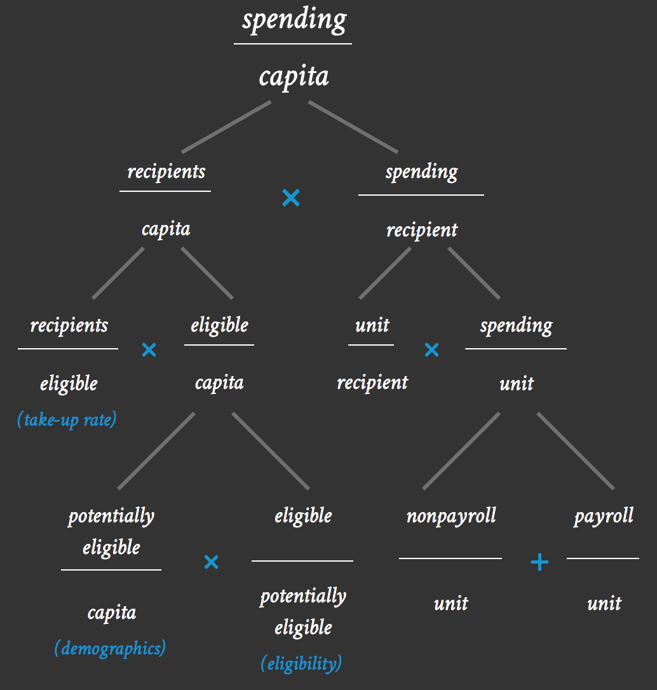

What everyone should know about their state's budget
Scroll to begin orskip intro
State and local governments educate schoolchildren, train the future workforce, care for the sick and elderly, build roads, patrol neighborhoods, extinguish fires, and maintain parks. In short, they’re pretty important. But few Americans understand where their state and local tax dollars go and to what effect. It’s not just the amount of money spent that matters, it’s why that money is spent the way it is.
Through this web tool, we aim to fill that knowledge gap. The tool allows users to get under the hood of their government and understand not only how much a state spends but also what drives that spending.
To do this, we apply a basic framework to all major areas of government spending. The framework says that state spending per capita is both a function of how many people receive a service and how much that service costs the state for each recipient.
We’ll break down recipients per capita first.
Not every resident of a state qualifies for every service—a disproportionately young population, for example, means more K–12 students in schools and fewer drivers on highways, while a disproportionately impoverished population means more public welfare recipients.
Further, not every eligible person chooses to receive or is able to get every service: not everyone with a driver’s license drives on highways, not every student enrolls in a public school, and not everyone who applies for housing assistance gets it. So we break recipients per capita down into eligible people per capita and recipients per eligible people.
Going one step further, the number of eligible people per capita is a function of both demographics and policy decisions: the number of people eligible for Medicaid is a function of poverty rates and state Medicaid eligibility laws, and the number of drivers is a function of age as well as driver’s license eligibility laws.
Now, let’s back up and look at the other major set of factors driving spending per capita. Though demographics, eligibility, and take-up rate (the number of people who choose to enroll) determine the proportion of a state’s residents who receive a given service, states also spend different amounts of money on services for each recipient. Spending per recipient can be broken down into goods or services provided to each recipient and spending on a unit of each good or service (where a unit might be a teacher, prison guard, mile of highway, or state park ranger).

Finally, states spend money on both people and things (teachers and books, doctors and medicine, prison guards and prisons), so we divide spending per unit into salaries (payroll spending) and everything else (nonpayroll spending).

Looking at the full picture, we can start to see how spending per capita is an incomplete metric because it doesn’t provide any information about a state’s demographics, its policy decisions, its administrative procedures, or the choices its residents make. 
In this tool, you’ll see the spending per capita breakdown for all states and the District of Columbia across all major functional categories. It allows you to see how each state ranks, and you can sort by any factor you choose. (One frequent outlier is DC; though included in the rankings, it often functions more like a city than a state) We’ve included some annotations to guide you along the way. By exploring the tool, you’ll gain a sense of how much each state spends on any given area and why states spend what they do.
Of course, a lot more goes into state and local budgeting than the simple ratios presented here. And we are not saying that New York should be more like North Dakota (or vice versa). The goal is simply to help people understand why their state may look different from other states and what they might be able to do about it.
spending
capita
recipients
capita
×
spending
recipient
recipients
eligible
(take-up rate)
×
spending
unit
eligible
capita
×
unit
recipient
potentially eligible
capita
(demographics)
×
payroll
unit
eligible
potentially eligible
(eligibility)
+
nonpayroll
unit